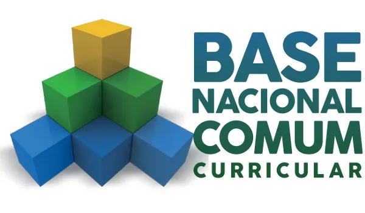
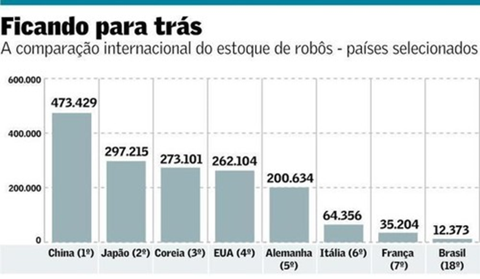

Mercado de robótica educacional
Mundialmente
A robótica, assim como a Internet das Coisas, faz parte da Indústria 4.0. Esse mercado tem crescido muito nos últimos anos em todo o mundo.
Uma pesquisa realizada pela Boston Consulting Group (BCG) informa sobre uma projeção de crescimento do setor de robótica tem a expectativa de salto de US$ 25 bilhões de faturamento, em 2021, para US$ 87 bilhões, até 2025 e para 2030 entre US$ 160 bilhões e US$ 260 bilhões.
Ademais, Segundo a Federação Internacional de Robótica, somente em 2017 foram vendidos 381 mil robôs, o que movimenta toda uma linha de produção de materiais para esse setor. Principalmente na pandemia, onde muitos processos tecnológicos tiveram mudanças, a indústria de robôs teve um bom crescimento. De acordo com uma análise do banco dedados de capital de risco de PithBook, em 2020, empresas de capital de risco investiram US$6,3 bilhões nesse setor.
Esse crescimento se dá por conta da mudança no perfil do consumidor e a velocidade dos avanços tecnológicos, principalmente ligados à inteligência artificial.

Brasil
O mercado brasileiro de robótica cresce muito no Brasil. O número de robôs no país aumentou 68% em um ano, passando de 60 mil em 2019 para 101 mil em 2020, de acordo com o Mapa do Ecossistema Brasileiro de Bots. São 24 mil de robôs que estão em operação e trocam cerca de 92 mil mensagens por mês com humanos via sistema ChatBot. O uso de robôs na área da saúde também cresceu muito, cerca de 60% de crescimento de 2017 para 2018. No início de 2021, máquinas estavam presentes em 41 hospitais e em mais de 2300 cirurgias.
Até 2030, o uso da robótica no ensino deve crescer bastante no Brasil. Essa transformação está prevista na Base Nacional Comum Curricular (BNCC), que estimula o uso da robótica educacional para desenvolver habilidades nos alunos.
De olho nas estatísticas, percebe-se que o cenário futuro é muito promissor e atrai a atenção dos fabricantes de robôs. A criação de produtos para os consumidores também facilitou o desenvolvimento do mercado, com equipamentos que limpam residências, fazem monitoramento e, até mesmo, ajudam na educação infantil. É aqui que entra a 5MT.
Ultrapassado
Mesmo o Brasil tendo esse crescimento no mercado de robótica, comparado com outros países, ele está um pouco atrás. Segundo a consultoria Idados, o Brasil tinha 12.373 máquinas em 2017, o que é apenas 0,6% dos robôs instalados no mundo. Esse número põe o Brasil na 18º posição do ranking das nações mais automatizadas.
Ademais, de acordo com os dados, o Brasil caiu da 34ª posição em 2008 para 41º lugar em 2017, chegando a 13,6 robôs para cada 10 mil trabalhadores. O índice médio no mundo está na faixa de 80, puxado pelos países desenvolvidos.
Concluímos que o Brasil está muito atrás em comparação aos outros países na questão mercado de robótica na década passada. Entretanto, esse cenário se prolonga aos dias de hoje. De acordo com a Federação das Indústrias do Estado de São Paulo (Fiesp), a indústria 4.0 no Brasil ainda não avançou em Big Data, Internet das Coisas e Inteligência Artificial.
Dessa forma, para preparar os estudantes para o futuro, inúmeras escolas, no mundo todo, têm utilizado a robótica para promover – desde pequenos – o pensamento crítico e computacional nos alunos. Além disso, essa tecnologia promove também o engajamento dos estudantes.
Oportunidade!
A proposta da 5MT é o foco total na tecnologia, na inovação, nos nossos clientes e na mudança social que a robótica educacional faz na vida das pessoas, não só as crianças e jovens que estão na fase de amadurecimento, mas também para adultos, isso pois a robótica educacional é uma área pouco explorada e aproveitada, visto que o uso de robôs e o consumo de peças eletrônicas e mecânicas só crescem no cenário atual.

Com essa oportunidade causada pelo déficit tecnológico no Brasil, a 5MT vem com bastante foco em investimento no bom relacionamento com o cliente e compreender as necessidades do público.